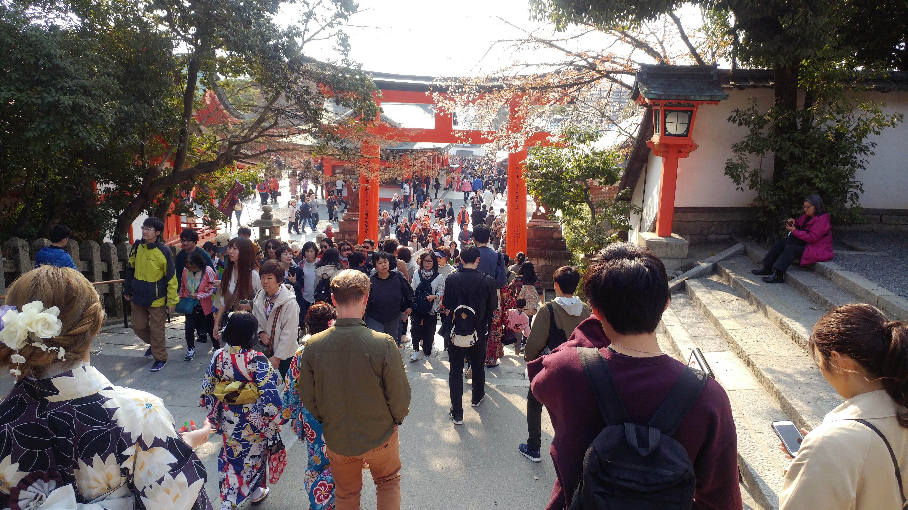
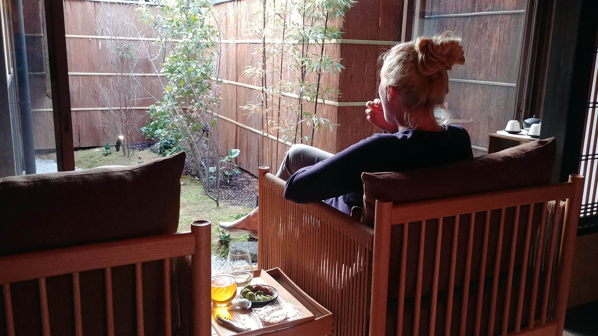

Dlightning
Dlightning
There's a zen garden in Kyoto, behind a temple called Ryōan-ji. Fifteen stones sit in it, sand raked around them like water around islands. People travel a long way to sit on the wooden veranda and look at it. What you can't do, from any spot on that veranda, is see all fifteen stones. One is always hidden behind another. Move, and you free that stone but lose a different one. The garden was laid out, around five hundred years ago, so that the whole of it can never be held in a single view.
I used to think that was a riddle to solve, that somewhere on the veranda there's an angle where the count finally comes out right. There isn't one. The hidden stone is the design. The garden isn't fifteen stones you happen to see fourteen of. It's a composition built around the one you don't.
This runs against an instinct most makers carry, that the work is the stuff you add. The lines you draw, the notes you write, the thing you ship. We measure effort by what accumulates. But a potter will tell you the pot is the hollow, not the clay. Lao Tzu wrote it down two and a half thousand years ago: thirty spokes meet at a hub, and the cart rolls because of the hole at the center. We shape the clay, and the emptiness inside is what holds the water. The walls go up, and the part you live in is the air they leave between them.

What Ryōan-ji does is make the absence the subject. You sit there and your mind keeps reaching for the stone it can't see, and that reaching is the experience. The garden hands you a frame and withholds the middle of it, and in the withholding it gives your attention back to you. A complete picture would let you off the hook. You'd take it in, file it, walk away. The missing piece is what keeps you on the veranda.

Most of what we build runs the other way. We fill the screen because empty space reads as unfinished, as money left on the table. The banner goes in, then the row of things you might also want, until there's nowhere for the eye to rest and nothing left for the person to decide on their own. A page with room on it looks like a page that forgot to do its job.
The discipline was never addition. Anyone can add more. The discipline is trusting that what you leave out will carry more than what you put in, and being willing to look lazy or unfinished while it does. The feature you didn't build. The sentence you cut. None of it shows up in a changelog, and it's the half of the work that holds the rest in place.
Fourteen stones, and one you're never allowed to see at the same time. Five hundred years on, people cross the world to sit with the gap. I've come to think most work worth doing has a stone like that in it somewhere, the part that isn't there, the one everything else is arranged around. Nobody can point to it, and yet it's the reason the rest holds.
With a pair of shears a bonsai tree takes its shape from what you cut away. I've built one you can grow and prune in the browser, BonsaiBox.